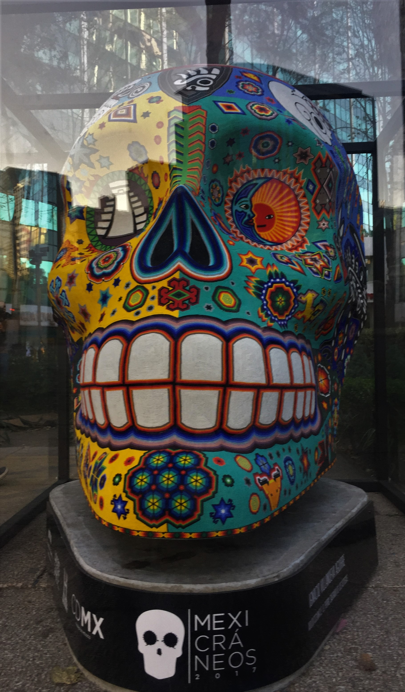
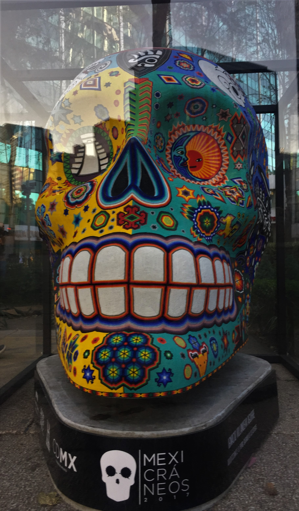

Isaac Jimenez's SCC IT162 Portal

 

Welcome!
My name is Isaac Jimenez. I am currently enjoying the programming side of web development. Growing up, the world wide web was always a magical place. It was a free resource to learn anything you ever wanted and visit any place around the world with a few keystrokes. Being able to learn the mechanisms that occur behind the scenes of a website has enchanted my curiosity. From brainstorming ideas for websites (or tools) to reviewing how to improve the final product, I have not found anything as rewarding as learning web development.
Personal hobbies that I enjoy are reading, playing video games and learning about mechanisms of the brain to optimize my own personal growth.